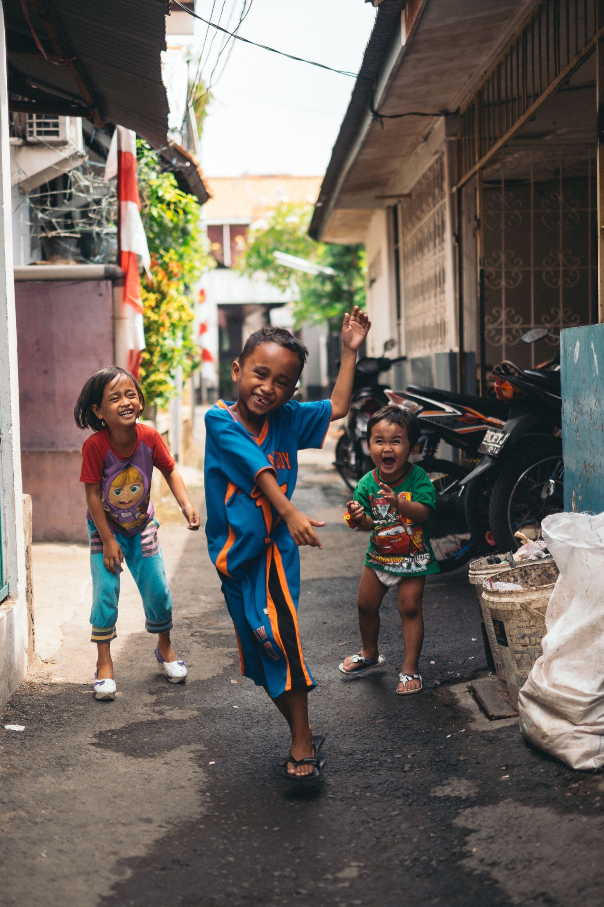

Loss of Parental Care
Children who have lost one or both parents may need additional care, stability and emotional support.
A place where every child feels loved, safe and at home.
Who We Help
Tshinakaho Haven aims to support orphaned and vulnerable children who need a safe, caring and supportive environment.
We believe that difficult circumstances should not prevent a child from feeling loved, receiving an education or having opportunities for a brighter future.

Our Beneficiaries
Children may require additional care and support for many different reasons. Tshinakaho Haven aims to provide a stable environment where vulnerable children can feel safe, valued and supported.
Our focus is not only on providing children with a place to stay. We aim to create an environment that supports their wellbeing, education, development and sense of belonging.
When Support May Be Needed
Tshinakaho Haven aims to support children who may be experiencing circumstances that affect their access to a safe and stable home.
Children who have lost one or both parents may need additional care, stability and emotional support.
Some children may experience home circumstances that do not provide the stability and support they need.
Social and family challenges can affect a child's wellbeing, education and development.
Some children may require a safe and supportive alternative care environment where their everyday needs can be met.
Our Commitment
Regardless of their circumstances, we believe every child should have the foundation they need to grow and build their future.
A secure and stable environment where a child can feel protected and cared for.
A caring community where children feel accepted, valued and part of a family.
Access to learning, encouragement and support to help children develop their abilities.
The opportunity to develop confidence, life skills and hope for a brighter future.
Make A Difference
Community members, volunteers, donors, sponsors and organisations can play an important role in supporting the children Tshinakaho Haven aims to serve.